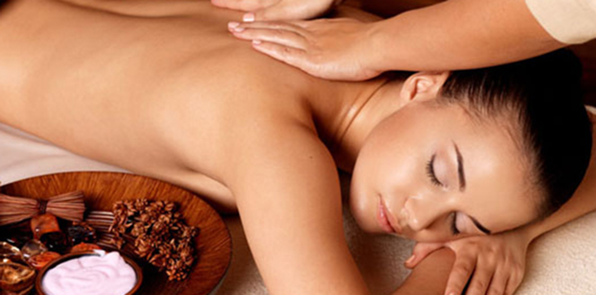

Sportska masaža
je namijenjena sportistima i osobama koje se aktivno bave sportom, jer joj osnovna funkcija nije opuštanje, već sprječavanje povreda i povećanje sportskih mogućnosti. Koristi se kombinacija više tehnika, a pokreti su brži i intezivniji od relaks masaže. Najviše su orijentisani na istezanje mišića što povećava njihovu elastičnost. Masaža traje 60 minuta, parcijalna 30 minuta.
U koliko je fizička aktivnost kuju obavljate u toku dana, previše naporna, verovatno ćete osećati iscrpljenost i zamor. To je zapravo prirodan proces jačanja, povećanja fleksibilnosti i poboljšanja kardiovaskularne izdržljivosti. Redovno podvrgavanje masaži će smanjiti iscrpljenost i opustiti vas i omogućiti da se nakon toga osećate mnogo prijatnije. Sportka masaža ima pozitivan uticaj i na FIZIČKO ZDRAVLJE aili i povoljan PSIHOLOŠKI uticaj.
Takodje smanjuje mogućnost nakupljanja mlečnih kiselina koja se vremenom pretvara u kalcifikate, koji mogu da izazovu mišićnu napetost pa čak i bol. Putem sportske masaže ubrzava se oporavak organizma nakon treninga, ali se takodje mišići mogu pripremiti za trening zagrevanem i istezanjem.
Fizički benefiti sportske masaže
Ako ste do sada imali dobru masažu u Beogradu, znate da se posle nje osećate mnogo bolje. Osećate manju napetost u mišićima. Bolovi nakon povreda usled fizičke aktivnosti se smanjuju. Ovaj efekat najbolje će se objasniti fiziološkim razlozima. Usled prevelike fizičke aktivnosti ili povrede mišića, u mišićna tkiva dospeva manja količina krvi nego što je to uobičajeno. Kvalifikovani terapeut je u stanju da deluje na mišić na takav način, koji dovodi do povećanja prokrvljenosti mišićnog tkiva. Ovo je veoma vežno zarad dobre cirkulacije i dovođenja hranljivih materija u mišićno tkivo. Kada dobijete sportsku masažu na taj način obezbeđujete hranljive materije za vaše mišiće i pospešujete ozdravljenje. Kada dobijete duboku masažu mišića, vaši mišići su u stanju da se oslobode mlečne kiseline. Sportka masaža obezbeđuje da se pore na membranama vaših tkiva otvore, izbacujući otpadne materije napolje, a usisavajući hranljive materije unutar mišića. Teško je na pravi način istegnuti sve mišiće u vašem telu.
Psihološki benefiti sportke masaže
Nakon teških fizičkih aktivnosti često je potrebno vise od fizičkog oporavka. Vežbanje često može biti iscrpljujuće. Ako se borite da skinete višak kilograma, verovatno osećate pritisak da treba da vežbate vise. Ako se taktičite u nekom sportu ili profesionalno trenirate, onda je pritisak na vas mnogo veći od fizičke iscrpljenosti i bola. Ne postizanje cilja ili strah od povređivanja mogu biti psihološki zahtevni. Masaža ima i duboke psihološke benefite. Kinetico masaža Beograd je poznata po tome da ublažava depresiju, podiže raspoloženje i smanjuje anksioznost, smiruje um i poboljšava san. Depresija može smanjiti motivaciju, te s toga može postati teško da se ostane u vrhunskoj formi. Visoki nivoi stresa često dovode do preterane konzumacije hrane i izbegavanje vežbanja.